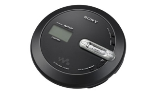

Sony D-NF430 CD Walkman
Features
| Brand Name | Sony |
|---|---|
| Item Weight | 7.725 ounces |
| Product Dimension | Width(mm)137.8, Height(mm)30.9, Depth(mm)137.8 |
| Item model number | DNF340 |
| Battery Life | CDDA(h) 41.0 |
| Number of Items | 1 |
| Remote Control Description | None |
Multi-codec support: ATRAC/MP3 compatible, Burn 30 CD's onto 1 CD-R with ATRAC compression, FM/AM digital tuner with 40 station presets, Supplied SonicStage 2.3 software for easy music managment and CD burning via your PC, Supports ID3 tag (CD-text) to show song title, album and artist name, Multiple bitrate compression setting allows you to choose for quality of music or quantity of songs, New type of headphones for perfect sound quality, Long battery life of upto 41 hours playback, and 3-line LCD on the unit for easy navigation between groups and tracks.